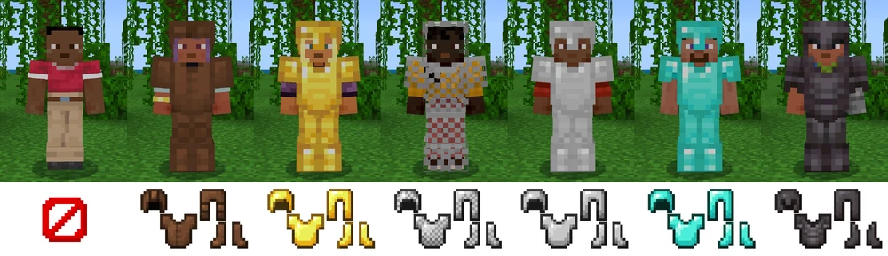
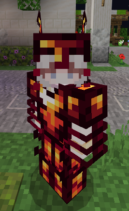

Yes, thats me.
I am a Computer Science major studying at UTRGV. I am so far loving learning programming and do so in school and in my own time.
Although I was born here in the United States in Texas, I originally lived in Mexico with my parents for 7-ish years and is how I learnt Spanish.
I experienced a great deal of misfortune in those years, but I cannot ultimately say they did not make me who I am today, and I will forever be grateful for the opportunities my parents have been able to give me.
Some of my hobbies include: Creating both digital (Pixel) and traditional (Pencil) art, listening to music (usually EDM or Breakcore),
playing videogames (RPGs and Movement Shooters), or creating Addons for Minecraft Bedrock.
I think ever since I started college here at UTRGV, I realized I really did find my calling with Computer Science.
Every assignment and homework has felt like a puzzle for me to solve, but even these assignments that make me, the programmer, create a website, are puzzles for me to decipher.
I just absolutely fallen in love with the simple complexity of these 1s and 0s. I know very well that this will get a hundred times more complicated but I really am more than happy to welcome it all in.
I want to learn all these languages in and out.
-a lightbulb turns on-
End of the day this is my page right?
Lets do a quick (but arguably long) detour and talk about a Minecraft Addon I've been working on since DECEMBER of 2023.
First things first... What is an Addon? (Heres the official introduction to Add-ons, made by Mojang.)
If you are aware, skip to the next section below.
A Minecraft Addon is what many would call a gameplay modification. In the base gameplay of Minecraft, you only regularly are able to obtain 6 sets of armor.
These would include:
However, Minecraft Addons can, in this example, create brand new Armor Sets. The amazing thing about these "Addons" is that they are not limited to just Armor, as they can add any amount of endless content.
There are hundreds upon hundreds of community-made Addons that add thousands of items, from Cyberpunk Cars to Medieval Dragons, Godzilla, or even Groot.
| Flesh Armor | Entropy Armor | Null Cultist Armor | |
|---|---|---|---|
| Defense: | 3 | 18 | 7 |
| Durability: | 40~ | 700~ | 70~ |
| Repairability: | 50% | 15% | 100% |
| Enchantability: | 1 | 32 | 15 |
Shortly here, I will allow you to download a portion of the Addon I am currently working on. And I'm only allowing you a portion because my folder management is horrible and I do not want to embarass myself. >:D
These properties/armor aspects are from the actual game and I did not create these, I am simply explaining how they interact with the game.
I have, in my Addon, manipulated the values of these aspects to create the "illusion" of having brand new armor sets, but all the textures and code you will download were typed by my hands alone.
Heres a picture of Entropy Armor being worn in-game.
Heres the download for my Addon.
Now unfortunately, you will not be able to run this file ingame, without of course owning Minecraft.
However, you may still rename the file from "RPG Snippet.mcaddon" to "RPG Snippet.zip" to view the contents inside.
Heres a guide on how to install and run a mcaddon if you do happen to own Minecraft: Add-On Guide
splat.